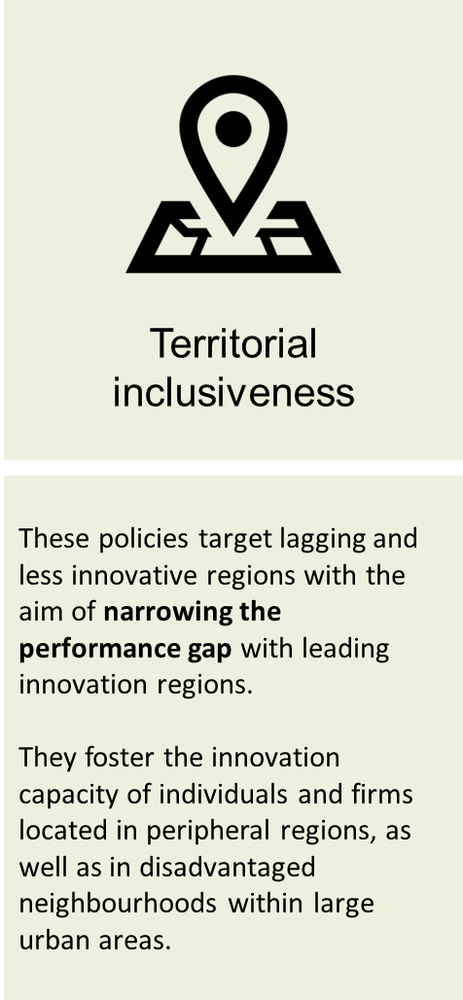

Social, Industrial and Territorial Inclusiveness
Inclusive innovation policies have explicit aims to contribute to one or more of the following objectives:
| [1] | [2] |  [3] |
Innovation policies addressing industrial and territorial inclusiveness challenges indirectly also address social inclusiveness ones. This is due to the fact that, when innovation capacities are not widely distributed across sectors and regions, the well-being of some groups in society is negatively affected. This is particularly true for individuals working in less innovative sectors and/or living in less innovative regions that suffer from multiple factors of disadvantage (e.g. low skills, low income), as they are less able to move to more innovative activities. Therefore, by enhancing the innovation capabilities of lagging firms and regions, these policies are also expected to benefit individuals and social groups.
Interactions among social, industrial and territorial inclusiveness

The rationales for implementing different inclusive innovation policies vary – but they all share a common goal, which is to tackle misallocation of resources in the economy that is due to inequalities and exclusion. This is critical to foster economic growth and job creation, as when resources in an economy are misallocated (e.g. workers with capacities to participate in innovative activities do not have opportunities due to discrimination), the economy performs below its potential.
Summary of rationales for implementing inclusive innovation policies
Tackling the misallocation of resources in the economy
Inclusive innovation policies tackle in particular the misallocation of human resources (and to a certain extent technologies) across the economy as a result of the limited opportunities of some groups or firms to participate in innovation activities. Such misallocations may arise due to discrimination in labour markets, barriers to access to financial resources that specifically affect smaller players, and low geographical mobility of workers, resulting in significantly lower levels of productivity. [4]Tackling the specific barriers that challenge participation in innovation such as, for instance, limited access to resources on financial markets can complement innovation policy efforts. However, very often these policies alone are not sufficient because low participation in innovation activities often stemps from a combination of barriers. Capacity-building is often also essential to raise participation in such activities. Consequently, innovation policies are an adequate means to addressing inclusive growth.
Inclusive innovation policies have the potential to reduce resource misallocation, leading to increases in terms of aggregate productivity and well-being, in particular by:
- Fostering the integration of previously disadvantaged groups in research or innovation activities, and by promoting entrepreneurship by those groups. The study of Hsieh et al. (2013) shows that the improved allocation of skills in the United States due to the integration of formerly discriminated groups in the labour markets, including African Americans and women, may have accounted for 15% to 20% growth in aggregate output per worker over the past 50 years.
- Promoting firm growth and job creation in the formal economy, e.g. through the support provided to early-stage start-ups and SMEs led by disadvantaged groups. The removal of barriers to their participation in innovation activities can further contribute.
- Addressing credit market failures faced by entrepreneurs from disadvantaged groups (e.g. overly strict conditions for accessing credit, high borrowing costs). Some studies point out that credit market failures might partly explain cross-country differences in productivity and adoption of new technologies (Banerjee and Duflo, 2005).
- Promoting technology transfer, i.e. the adoption of new technologies or organisational methods by firms in less innovative sectors (e.g. agriculture, traditional sectors). This is crucial, as barriers to technology adoption facing firms might at least partly explain differences in economic development between countries (Parente and Prescott, 1994; OECD, 2015).
- Increasing the productivity and innovation performance of less innovative firms and sectors – e.g. through provision of training or business support services – which increases the productivity of resources used.
Find more details on the rationales for implementing innovation policies for social [1], industrial [2]and territorial [3]inclusiveness in their specific pages in the toolkit.
Banerjee, A., V., and E., Duflo, 2005. “Growth Theory through the Lens of Development Economics”, In Handbook of Economic Growth, Elsevier, 473-522.
Hsieh, C., E. Hurst, C. Jones a P. Klenow (2013), The allocation of talent and U.S. economic growth. NBER Working Papers, 2-48, http://search.ebscohost.com/login.aspx?direct=true&db=edb&an=92582967&scope=site [5]
OECD (2015), The future of productivity, OECD Publishing, Paris, http://dx.doi.org/10.1787/9789264248533-en [6].
Parente, S. and E. Prescott, 1994. “Barriers to Technology Adoption and Development” Journal of Political Economy 102 (2): 298-321.